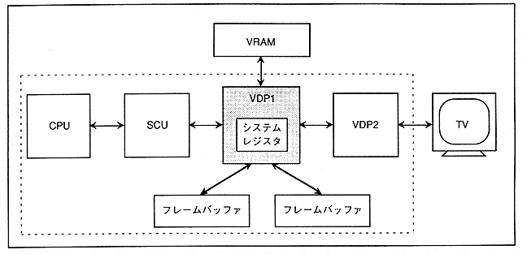

VRAM and two frame buffers are connected to VDP1 (Figure 3.2). VRAM drawing commands are set from the CPU via the SCU.
∙ VDP1 reads drawing commands from VRAM and writes drawing data to the frame buffer (draws). Information that controls drawing is set in the internal system register of VDP1. The drawn frame buffer data is displayed on the TV via VDP2, which controls image display.
Figure 3.2 VDP1 system configuration
